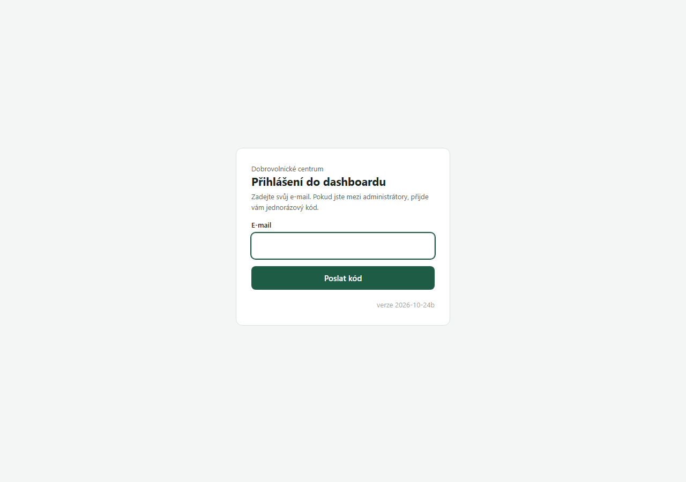
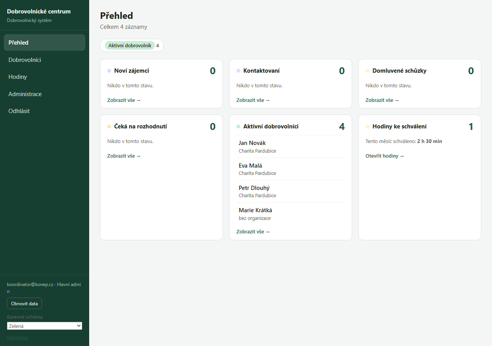
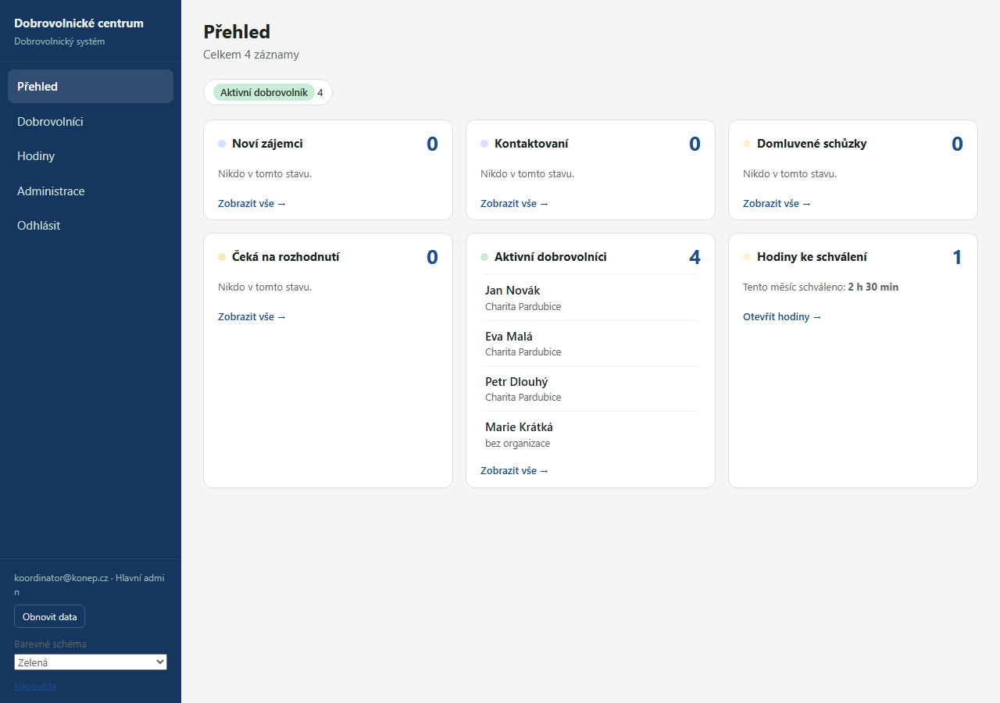
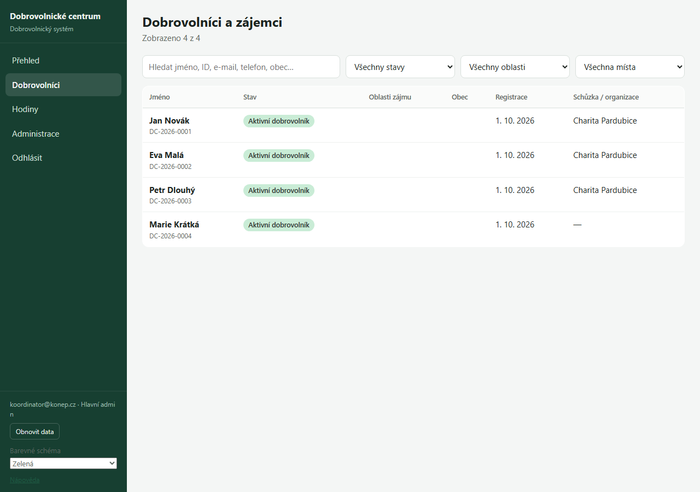
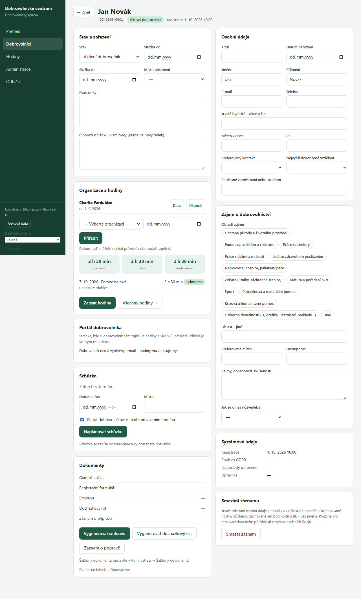
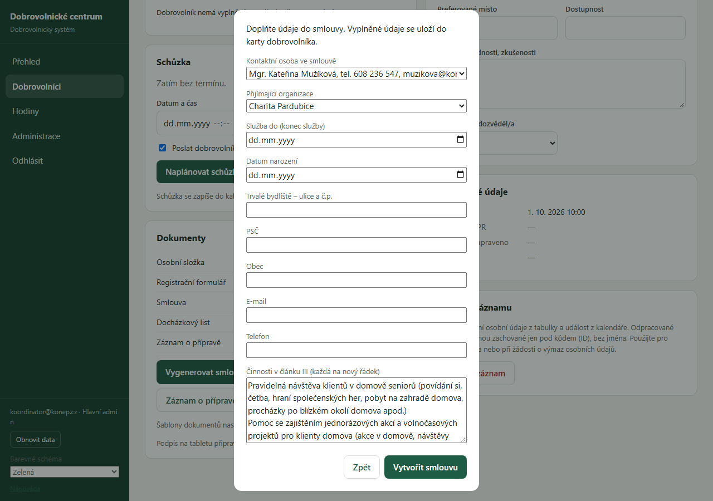
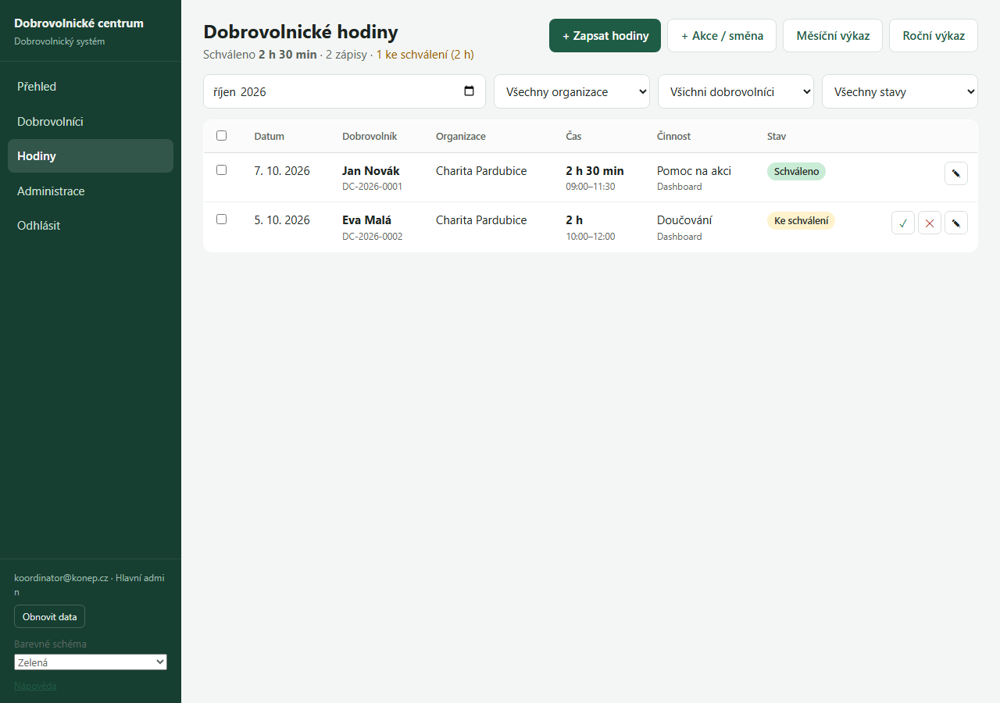
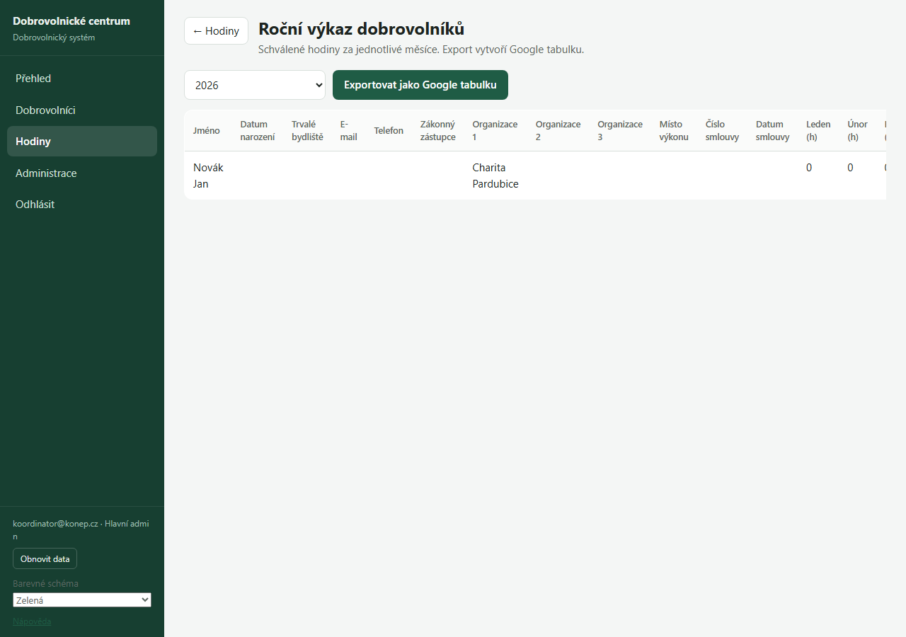
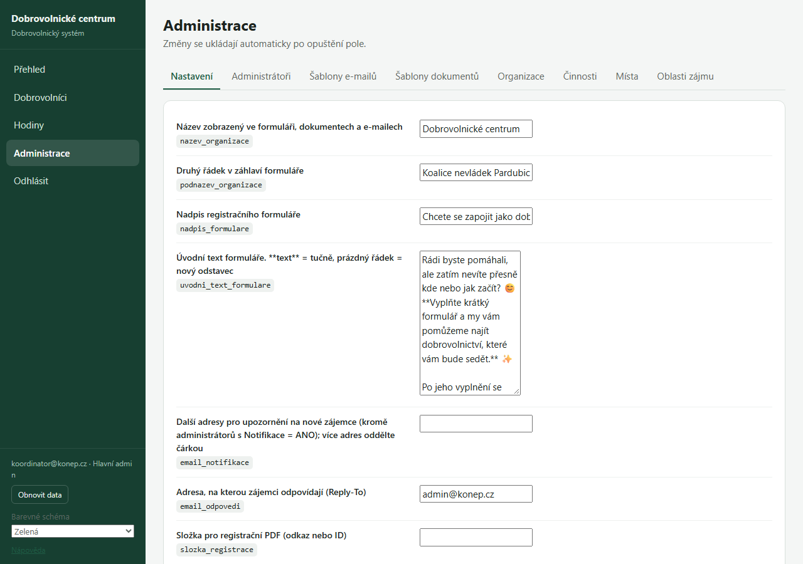

Tato nápověda popisuje, jak s dashboardem pracovat krok za krokem.
1. Přihlášení a první kroky
Do dashboardu se přihlašujete přes e-mail, který máte v systému jako administrátor.
- Otevřete adresu dashboardu v prohlížeči.
- Zadejte svůj e-mail a klikněte na přihlášení.
- Přijde vám e-mail s kódem nebo odkazem. Opište kód, nebo klikněte na odkaz.
- Po přihlášení se otevře přehled.

Přihlašovací oknoLevé menu
Přehled (co čeká na vyřízení), Dobrovolníci (seznam), Hodiny (zápis a výkazy) a Administrace (nastavení, jen pro správce). Dole najdete Obnovit data, volbu Barevné schéma a odkaz Nápověda.

Levé menuBarevné schéma
V levém menu dole vyberete barevné schéma dashboardu. Volba se uloží ve vašem prohlížeči a platí jen pro vás.

Barevná schémataOdhlášení
Tlačítko Odhlásit je v levém menu. Sdílíte-li počítač, vždy se odhlaste.
2. Dobrovolníci
Přehled
Na úvodní stránce vidíte dlaždice podle stavu zájemců: nové zájemce, kontaktované, domluvené schůzky a aktivní dobrovolníky. Kliknutím na dlaždici se otevře seznam.
Seznam dobrovolníků
Můžete hledat podle jména a filtrovat podle stavu. Kliknutím na řádek otevřete kartu dobrovolníka.

Seznam dobrovolníkůKarta dobrovolníka
Karta obsahuje několik částí:
- Stav a zařazení – stav (například Nový zájemce nebo Aktivní dobrovolník), datum začátku a konce služby, místo působení, poznámky a činnosti, které se uvedou ve smlouvě.
- Osobní údaje – jméno, datum narození, adresa, e-mail a telefon.
- Zákonný zástupce – zobrazí se jen u dobrovolníků mladších 18 let (jméno, adresa, datum narození, e-mail a telefon).
- Dokumenty – odkazy na vygenerované dokumenty (viz kapitola 3).

Karta dobrovolníkaZměna stavu
Stav změníte v kartě v rozbalovacím seznamu. Změna se uloží ihned.
3. Dokumenty
Dokumenty se vytvářejí z šablon. Tlačítka jsou v kartě dobrovolníka v části Dokumenty.
Smlouva
Kliknutím na Vygenerovat smlouvu se otevře okno. Doplníte v něm chybějící údaje (například konec služby) a vyberete kontaktní osobu a přijímající organizaci. Údaje, které doplníte, se uloží do karty.
- Dobrovolníkům do 18 let se vytvoří smlouva pro 15–17 let, starším pro 18+.
- U mladších 18 let je nutné vyplnit údaje zákonného zástupce.
- Dokud nejsou všechna povinná pole vyplněná, okno zůstane otevřené a napíše, co chybí.

Okno před generováním smlouvyDocházkový list
Tlačítko Vygenerovat docházkový list vytvoří list s údaji dobrovolníka a místem výkonu.
Záznam o přípravě
Tlačítko Záznam o přípravě otevře výběr místa školení a školitele (pro vstupní i praktickou část). Dokument se uloží do společné složky a v kartě dobrovolníka bude odkaz.
Úpravy
Všechny dokumenty jsou Dokumenty Google. Můžete je upravit přímo v nich, například před tiskem.
Smazání
U každého dokumentu je tlačítko Smazat. Dokument se přesune do koše na Disku, odkud ho lze do 30 dnů obnovit. U smlouvy se vymaže i číslo a datum smlouvy.
4. Hodiny
Zápis hodin
V záložce Hodiny zapíšete hodiny jednotlivě, nebo jako akci či směnu. Každý zápis se zobrazí jako „Ke schválení“, dokud ho neschválíte.
Schválení
Zápisy schvalujete v seznamu hodin. Schválené hodiny se počítají do výkazů. Schválený zápis už nelze měnit, pokud na to nemáte oprávnění.
Měsíční výkaz
Tlačítko Měsíční výkaz otevře tabulku pro jednu organizaci a jeden měsíc. Do políček vepište hodiny.
Roční výkaz
Tlačítko Roční výkaz ukáže za zvolený rok všechny dobrovolníky a jejich hodiny po měsících. Tlačítkem Exportovat jako Google tabulku vytvoříte tabulku ve složce Výkazy.

Seznam hodin
Roční výkazPortál dobrovolníka
Dobrovolníci zapisují své hodiny sami na stránce portálu. Odkaz na ni jim pošlete z karty dobrovolníka.
5. Schůzky a kalendář
Domluvení schůzky
V kartě dobrovolníka vyberte datum, čas a místo. Kliknutím na Naplánovat schůzku se schůzka uloží do kalendáře. Dobrovolník dostane e-mail s potvrzením (můžete to vypnout zaškrtnutím).
Změna termínu
Změňte datum a čas a klikněte na Změnit termín. Dobrovolník dostane e-mail s novým termínem.
Zrušení schůzky
Tlačítkem Zrušit schůzku ji odstraníte z kalendáře.
6. Administrace
Tuto část vidí jen správci. Najdete ji v levém menu pod položkou Administrace.
Nastavení
Názvy, adresy šablon, složky na Disku, kontaktní osoby a místa školení. Změnu uložíte do pole vedle názvu.
Administrátoři
Seznam lidí, kteří mohou dashboard používat, a jejich role (Jen čtení, Koordinátor, Hlavní admin).
Šablony e-mailů
Texty automatických e-mailů. Můžete je upravit, ale zachovejte složené závorky, například {jmeno}.
Šablony dokumentů
Odkazy na šablony smlouvy (pro 15–17 let a 18+), docházkového listu a záznamu o přípravě. Vložíte sem odkaz na Dokument Google, který jste připravili.
Číselníky
Oblasti zájmu, místa a činnosti, které se nabízejí v jednotlivých formulářích.

Záložka Administrace7. Časté otázky a řešení potíží
Po změně se nic nezměnilo.
Stiskněte Ctrl + F5, aby se načetla nová verze stránky.
Okno se zavřelo a údaje se neuložily.
Otevřete znovu kartu dobrovolníka a zkuste to znovu. Údaje z okna se uloží až po úspěšném vytvoření dokumentu.
Smlouva nejde vygenerovat.
Okno vám napíše, které údaje chybí. Zkontrolujte, že dobrovolník má vyplněné datum narození, adresu, e-mail, telefon a přiřazenou organizaci.
Chybí dokument v kartě.
Zkontrolujte, že je v Nastavení vyplněná šablona a složka pro daný typ dokumentu.
Přihlášení nefunguje.
Zkontrolujte, že máte v systému zapsaný správný e-mail a že máte roli, která umožňuje přístup do dashboardu.
Kdo mi pomůže?
Napište správci systému.